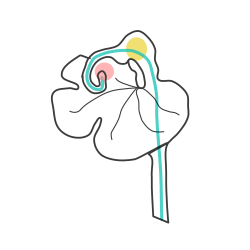

Hello world
Hello world
def wat(x, y):
for i in range(x):
y += x
return y
Hello world
Hello world
Slide 1
2018 sampling in Yunnan and Sichuan provinces, China
P. integrifolia
return
when curried, will become
a chain of functions, each
with a single argument
function(x) {
return function(y) {
return x + y;
};
}
Toytree documentation
Toytree documentation
Hello world
Pedicularis
Fading
hello
heereree